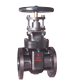
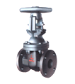
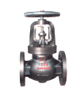
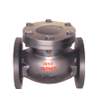
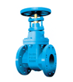
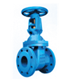
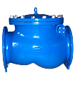
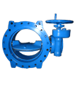

Cast (Ductile) Iron Valves
ANSI / BS / DIN Cast Iron Valves

Gate, Non-rising StemClass 125/250

Gate, Rising StemClass 125/250

Globe ValveClass 125

Swing CheckClass 125

Gate ValvePN16

Y-Strainer
Check Valve
Butterfly ValveOther Historical Product Categories
Cast Steel Valves · Forged Steel Valves · Stainless Steel Valves · Ball Valves · Butterfly Valves · Plug Valves · Fittings · Pipes · Flanges · Castings & Forgings
This is a browsable snapshot. The original archive contains around 250 individual ASP product pages with technical drawings and dimensional tables.